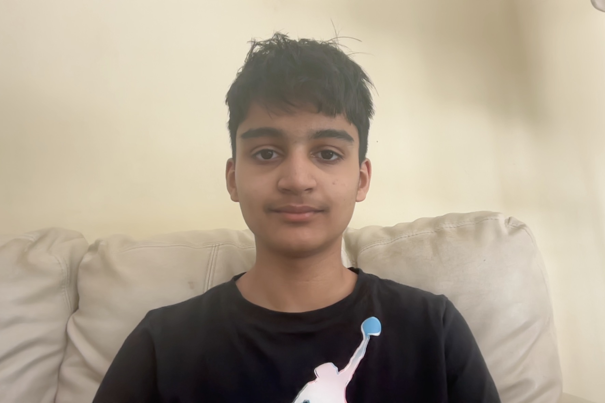
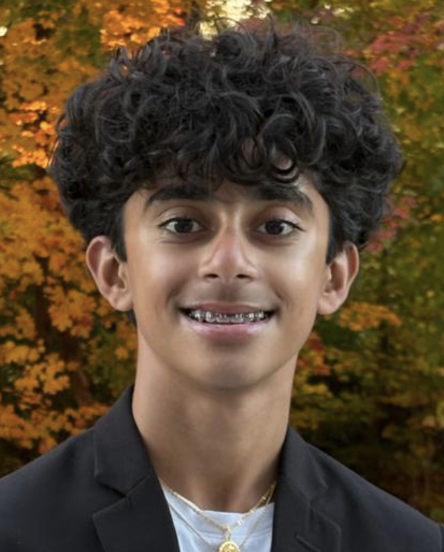
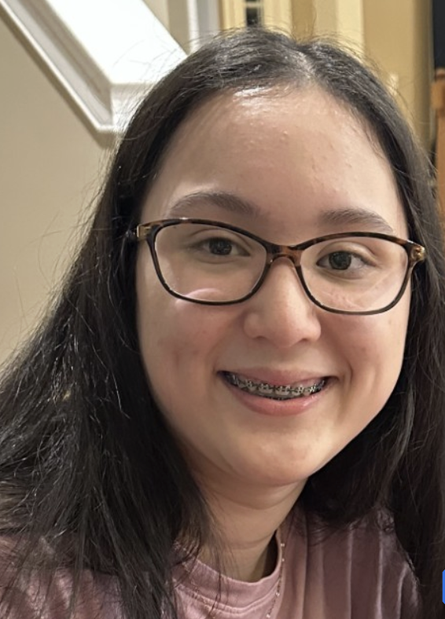
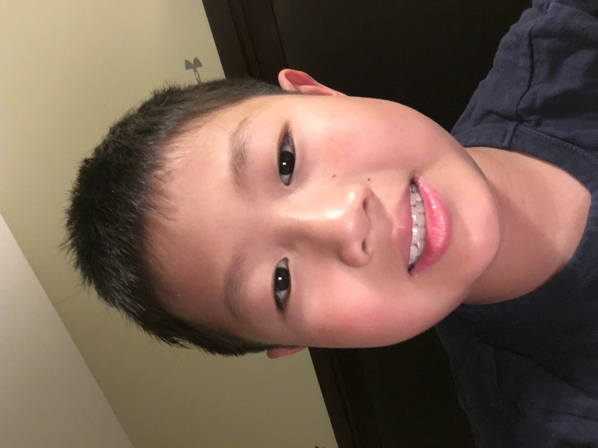

-

-
Your Path to Academic Excellence for FREE
- (123)-456-789
- exceleratetutoring13@gmail.com
- South Windsor, CT, 06074
Website made by Aarohan Parida
2026 Excelerate Tutoring. All rights reserved.
Highly qualified high‑school mentors ready to help you succeed

I’m a freshman at South Windsor High School and a coding tutor certified in HTML, CSS, JavaScript, and Python 3. I’ve built websites for other organizations, giving me real-world experience helping students create their own projects. I also teach middle school competition math and have placed Top 50 statewide in MATHCOUNTS and Top 5 in the New England Math League. I specialize in building strong problem-solving skills and confidence in both math and programming.
Hello, my name is David. I am a Freshman at South Windsor High School. I will teach students the critical knowledge they need for Algebra 1, Geometry, and SBAC math preparation, as they serve as a fundamental base for the math classes further in high school. I also will teach Economics and Finance so children can have basic knowledge on the necessary aspects of financial decision making and resource management. Along with this I will also teach how to use AI responsibly and efficiently along with useful study methods that will be beneficial throughout life.
Hi my name is Justin, I am a freshman in South Windsor High school I will be the tutor for the English literacy and writing section and also the algebra 1 and algebra 2 course teacher. I have taken classes up to algebra two and geometry and I will teach grades 6-8.
Hi my name is Daniel, I am a freshman in South Windsor High school I will be the tutor for the English literacy and writing section and also the algebra 1 and algebra 2 course teacher. I have taken classes up to algebra two and geometry and I will teach grades 6-8. Alongside with this I will teach students how to use AI correctly and effectively and how to use it for studying. I will also help student with any homework they receive and need assistance on.
Hi my name is Nibha Bala Gowda and I am a freshman in South Windsor High school. I have taken classes up to Algebra 2 so I will teach Pre Algebra and Algebra 1 as well as Science, History, and Language Arts. I will be teaching grades 1-8.
Hi, my name is Saanvi Nigam. In this program, I will tutor students in grades 1–8. I will be teaching Algebra 1, Pre-Algebra, Math 6, Math 3 & 4, and Math 1 & 2. I will also teach students how to use AI correctly and responsibly as a study tool. I can help with any homework students need assistance with. I have taken math courses through Algebra 2 and Geometry. I am patient, determined, and look forward to helping students build confidence and succeed in math.
I am highly qualified to tutor students in Math 5 and 7 and Algebra 1 due to my strong academic background and passion for mathematics. I am currently a 9th grade honors student taking Algebra 2 Honors, which places me two levels ahead in math after completing Algebra in 7th grade and Geometry Honors in 8th grade. I have maintained an A in all of my math classes and hold a 4.0 unweighted GPA while taking all honors courses. I am dedicated, patient, and committed to helping students build confidence and succeed in math.
Hello, my name is Kahi Dinesh, and I am a freshman at South Windsor High School. I am strong in both math and English and enjoy helping students learn in a clear and supportive way. I have completed math courses up to Algebra 2 and work with students in grades 5–7. I help tutor students in math and English, support them with studying and homework, and teach them how to use AI responsibly and effectively as a learning tool rather than a shortcut.
Hi my name is Aarshabh Pattanayak and I am a freshman at the South Windsor High School. I can tutor math, modern world history, and science. I also will teach how to correctly use AI and how to study with it. I can teach all math courses up until Algebra two and Geometry. I also have critical skills and knowledge on history and science. I tutor grades 6-8.

Hey guys! My name is Shaunak Tamhane and I am freshmen at SWHS. I have taken math classes up to Algebra 2 Honors and Geometry. I am here as a tutor for grades 6-8. I also will teach how to correctly use AI and how to study with it. However, my hobbies reside in sports, video games, reading, music, and watching TV.
Hi I'm Varshini AB, I am a freshman in South Windsor High school and I will be the tutor for Art (for social studies or other classes), the algebra 1 and algebra 2 course as well as for science. I have taken classes up to honors algebra 2 and physical science honors and have multiple experience with artwork and creative thinking. I also will teach how to correctly use AI and how to study with it, as well as helping students with any additional homework they receive. I will be teaching grades 6-8.
Hi, I’m Pratyaksha Y, a freshman at South Windsor High School. I will be a tutor for algebra 1, 2, and geometry. I can also tutor science. I have taken classes up to geometry. I will be teaching grades 6-8 and I can help students with their homework. Also, I will be teaching kids how to properly use AI and other tools to help them study.
My name is Sameeksha Sajjana and I’m a freshman in High School. I have taken classes up to Algebra 2 and will teach Pre Algebra and Algebra 1 along with Science, History, and Language Arts. I will be teaching these subjects from grades 1-8. I will additionally help students work on and understand their homework as well as teach them how to use AI correctly and efficiently to help use as a study tool in the future.
Hello, my name is Eshika Hanumanthkar! I am a freshman at South Windsor High School and I will be your tutor for math 4, math 6,will help you for the sbac reading portion, and I will help you how to strengthen your writing. I have taken these math classes and know how taking the sbac is like so I can help you pass and understand the subjects like I did! Also, I’ve taking reading classes and math classes that have helped me so much. Using these skills, I can also assist you on any homework or assignments you need help on!
Hi my name is Arnav. I am a freshman at South Windsor High School. I will serve as a math tutor, covering subjects including (but not limited to) Pre-Algebra, Algebra I, Geometry, and Algebra II. I have taken classes up to Algebra II. I also tutor social studies as well. I also will teach how to correctly use AI and how to study with it. I have critical skills in math and the intellectual ability for both math and social study related topics. I tutor grades 1-8.
Hi I'm Corinne Rich, I am a freshman in South Windsor High School and I will be the tutor for English and Social Studies. I have many experiences with creative thinking, critical thinking, and writing. I will help students with their writing and grammar, and help with any homework they recieve. I will be teaching grades 6-8.
Hi, my name is Suri, and I’m a freshman at South Windsor High School. I will be tutoring students in SBAC reading preparation, Math 3, and Math 4. I can also provide extra support with any homework or classwork a student may be struggling with, helping them better understand the material and build confidence in their skills.

Hi my name is Olivia, and I’m a freshman at SWHS. I’ll be tutoring in SBAC Prep Reading, and helping with homework, AI, and Study Methods. Additionally, I can help to organize notes, teach you how to use planners, how keep track of homework, and help you find the study strategies that work best for you.
Hi, my name is Armaan! I am a student at South Windsor High School, and I will be your tutor for middle school Math and Science (Grades 6-8). I have successfully completed Algebra 1 and am currently excelling in Honors Geometry and Honors Algebra 2. In Science, I have completed Honors Physical Science and have been recommended for AP Bio. I will use fun examples to teach the students and break down tough concepts into easy ideas to understand
Hi, My name is Cooper and I am a freshman at south windsor high school. I will be the tutor for basics of writing, extemporaneous speaking, and math 1 and 2. I will also be helping with homework when needed, and assignments. I will also be teaching the best ways to use AI for research and studying.
I am Jai Gundapwar and my specialties are math and social studies. I love math, history and I’m passionate about what I do. I love studying and learning new things about math. I have taken math classes all the way up till Algebra 2 and have skills in Geometry. I have taken all courses of history up until Modern World History. I I also will teach how to correctly use AI and how to study with it. will tutor grades 1-8.

Hello, my name is Brady Xu. I am a freshman in SWHS, and I want to help students bolster their intellectual abilities and critical thinking skills. I mainly help with math, as that is my strong suit. I had taken math courses such as Geo, Alg 1, Alg 2, and other out of school classes such as Art of Problem Solving. However, that does not mean I can only do math. If there is any student struggling with any other subjects like History or Science I am glad to help them boost their knowledge and guide them through their homework or anything else. My goal is to create a learning environment that is both helpful and fun, where students walk out confident and knowledgeable.
Your Path to Academic Excellence for FREE
Website made by Aarohan Parida
2026 Excelerate Tutoring. All rights reserved.